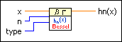

Spherical Hankel Function hn VI
Owning Palette: Bessel Functions VIs
Requires: Full Development System
Computes the spherical Hankel function, which is also known as the spherical Bessel function of the third kind.

 Add to the block diagram Add to the block diagram |
 Find on the palette Find on the palette |